Walking strides segmentation with adept
Marta Karas
2019-03-05
Source:vignettes/adept-strides-segmentation.Rmd
adept-strides-segmentation.RmdThis vignette provides an example of walking stride segmentation from subsecond accelerometry data with adept package. We demonstrate that ADEPT method ([3]) can be used to perform automatic and precise walking stride segmentation from data collected during a combination of running, walking and resting exercise. We demonstrate how to segment data (a) with the use of stride templates that were pre-computed based on data from an external study, (b) by deriving new stride templates in a semi-manual manner.
See “Introduction to adept package” vignette ([1]) for an introduction to the ADEPT method and usage examples of the segmentPattern function which implements the ADEPT method.
Raw accelerometry data sample
The adept package comes with a sample of raw accelerometry data collected during 25 minutes of an outdoor run. Data were collected at frequency 100 Hz with two ActiGraph GT9X Link sensors located at left hip and left ankle.
Running trial
Based on a mapmyrun mobile tracking application, the distance covered while an application was turned on is approximately 3.35 km. The ground elevation difference between start and end point of the data collection is approximately 36 m (17 m at the start point, 53 m at the finish point). The data sample attached is a subset of accelerometry data collected over a few days time; the sample attached should match the time while an application was turned on up to ~1 minute accuracy.
 Screenshot taken from a personal profile of mapmyrun tracking application, accessed via https://www.mapmyrun.com.
Screenshot taken from a personal profile of mapmyrun tracking application, accessed via https://www.mapmyrun.com.
Sensor and accelerometry data
The data were collected with two ActiGraph GT9X Link sensors at frequency 100 Hz. ActiGraph GT9X Link is an activity monitor which includes 3-axis accelerometer measuring body acceleration along three orthogonal axes. At frequency 100 Hz, 100 observations are collected each second, where each observation consists of 3 data points (one data point from each of three orthogonal axes), yielding a total of 300 data points per second.
Sensor location
One of the sensors was attached to the shoe with a clip on the outside side of a left foot, just below the left ankle. The other sensor was attached to the elastic belt located at hip, on the left side of a hip. Both devices stayed in a fairly stable way during the run.

 Wearable accelerometer devices location during the experiment. The devices were still covered with a protective plastic foil.
Wearable accelerometer devices location during the experiment. The devices were still covered with a protective plastic foil.
Data set acc_running
The sample accelerometry data is attached to the package as acc_running data frame. To access the data, load adept package.
# install.packages("devtools")
# devtools::install_github("martakarass/adept")
library(adept)
library(lubridate)
head(acc_running)
#> x y z vm date_time sensor_location
#> 1 -0.199 -1.012 0.133 1.039920 2018-10-25 17:57:30 left_hip
#> 2 -0.191 -1.027 0.133 1.053043 2018-10-25 17:57:30 left_hip
#> 3 -0.191 -1.035 0.121 1.059409 2018-10-25 17:57:30 left_hip
#> 4 -0.191 -1.027 0.109 1.050281 2018-10-25 17:57:30 left_hip
#> 5 -0.191 -1.016 0.109 1.039528 2018-10-25 17:57:30 left_hip
#> 6 -0.184 -1.012 0.121 1.035684 2018-10-25 17:57:30 left_hip
tz(acc_running$date_time)
#> [1] "UTC"acc_running consists of 300,000 observations of 5 variables:
-
x- acceleration measurement time series collected from a \(x\)-axis of the sensor accelerometer, -
y- acceleration measurement time series collected from a \(y\)-axis of the sensor accelerometer, -
x- acceleration measurement time series collected from a \(z\)-axis of the sensor accelerometer, -
vm- vector magnitude of \((x,y,z)\) vector of measurements, computed as \(vm = \sqrt{x^2+y^2+z^2}\), -
date_time- date and time of acceleration measurement collection stored asPOSIXct, -
sensor_location- sensor location label, one of:"left_hip","left_ankle".
Notes on date_time column values
The knitr HTML output truncates the subsecond level accuracy of
POSIXctvalues stored indate_timecolumn, hence in first rows of the table we see2018-10-25 17:57:30only; whenhead(acc_running)is executed in theRconsole, the result would be likely2018-10-25 17:57:30.00,2018-10-25 17:57:30.01etc.When
head(acc_running)is executed in the console, seemingly, there is “an error” indate_timecolumn; indeed, we would expect its second value to be17:57:30.01, not:17:57:30.00. Thedate_timecolumn was generated viaseq(from = as.POSIXct("2018-10-25 17:57:30.00"), by = 0.01, length.out = nrow(dat_sub)); I identify the problem to be the floating point arithmetic problem, as discussed in this SO question. Such errors are “made up for” over the column values, and the wholedate_timehas expected range of time.
Time collection spans 25 minutes. It agrees with a number of observations per sensor we have (150000), given the data was collected at frequency 100 observations per second.
Accelerometry data visualization
Raw accelerometry data
One way to visualize raw accelerometry data is to plot it as a three-dimensional time-series. Here, we plot data from three different time frames, each of 4 seconds length, simultaneously for data collected at left ankle and right ankle.
library(lubridate)
library(dplyr)
library(ggplot2)
library(reshape2)
library(gridExtra)
## Define time frame start values for data subset
t1 <- ymd_hms("2018-10-25 18:00:00", tz = "UTC")
t2 <- ymd_hms("2018-10-25 18:10:00", tz = "UTC")
t3 <- ymd_hms("2018-10-25 18:22:00", tz = "UTC")
## Subset data
acc_running_sub <-
acc_running %>%
filter((date_time >= t1 & date_time < t1 + as.period(4, "seconds")) |
(date_time >= t2 & date_time < t2 + as.period(4, "seconds")) |
(date_time >= t3 & date_time < t3 + as.period(4, "seconds")) )
## Plot (x,y,z) values
df = acc_running_sub %>%
select(-vm) %>%
melt(id.vars = c("date_time", "sensor_location")) %>%
mutate(dt_floor = paste0("time frame start: ",
floor_date(date_time, unit = "minutes")))
if (nrow(df) > 0) {
p = df %>%
ggplot(aes(x = date_time, y = value, color = variable)) +
geom_line(size = 0.5) +
facet_grid(sensor_location ~ dt_floor, scales = "free_x") +
theme_bw(base_size = 10) +
labs(x = "Time [s]", y = "Acceleration [g]", color = "Axis: ",
title = "(x,y,z) three-dimensional time-series") +
theme(legend.position = "top")
print(p)
} else {
msg = paste0("T1: ", t1,
", dt_row1 of acc_running: ",
acc_running$date_time[1], " ac_running_sub has no rows!\n")
stop(msg)
}
Note on sensors desynchronization
The two sensors used in experiment were set up to initialize their measurement collection at the same time. However, as discussed in [2], even when simultaneous initialization of the devices is used, measurements might still get desynchronized between devices after hours and/or days of data collection. For that possible reason, one should not expect 0.01 s-level alignment between the data collected form left ankle and left hip on the plots above.
Vector magnitude
Using vector magnitude \((vm)\) is a way to summarize a three-dimensional time-series \((x,y,z)\) as a one-dimensional time-series. Vector magnitude is computed as \(vm = \sqrt{x^2 + y^2 + z^2}\) at each time point of data collection.
## Plot vector magnitude values
acc_running_sub %>%
mutate(dt_floor = paste0("time frame start: ",
floor_date(date_time, unit = "minutes"))) %>%
ggplot(aes(x = date_time, y = vm)) +
geom_line(size = 0.5) +
facet_grid(sensor_location ~ dt_floor, scales = "free_x") +
theme_bw(base_size = 10) +
labs(x = "Time [s]", y = "Vector magnitue [g]", color = "Axis: ",
title = "Vector magnitude (vm) one-dimensional time-series") 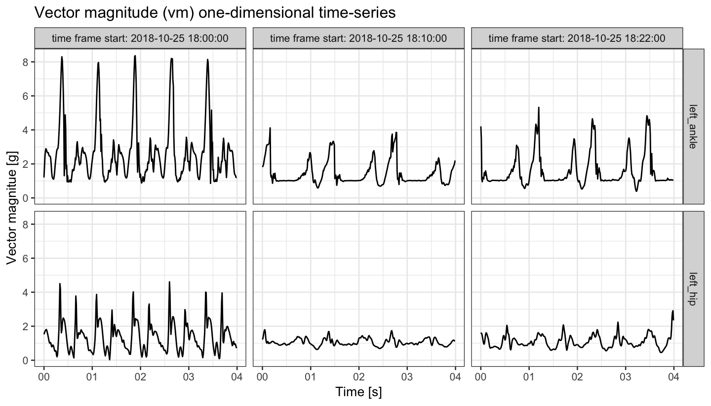
Observations
From the \((x,y,z)\) and \((vm)\) plots we can tell the presence of an asymmetric repetitive pattern associated with each walking stride (stride := two subsequent steps). Also, there are differences in data magnitude and stride duration between the three vertical plot panels:
The left vertical plot panel (
time frame start: 2018-10-25 18:00:00) corresponds to relatively fast running on a surface with no elevation changes; \((vm)\) time-series exhibits high magnitude. Also, there are more stride pattern occurrences captured within this time frame panel than on the two other panels, which suggests a higher ratio of strides per second performed by a runner in that time window.The middle vertical plot panel (
time frame start: 2018-10-25 18:10:00) corresponds to relatively slow running uphill; \((vm)\) exhibits relatively low magnitude of a signal and slightly different shape of stride pattern than in the left panel.The right vertical plot panel (
time frame start: 2018-10-25 18:22:00) corresponds to moderate-pace run or, possibly, walking.
Vector magnitude count
Clearly, it might be challenging to make a plot of all data points collected at frequency 100 Hz from 25 minutes-long exercise. A way to summarize accelerometry data of such high density is to use a vector magnitude count (vmc; also known as the mean amplitude deviation). For \(\overline{vm}(t,H)\) - average of \((vm)\) time-series over time window of length \(H\) starting at time \(t\), we define \[\mathrm { vmc } ( t, H ) = \frac { 1 } { H } \sum _ { h = 0 } ^ { H - 1 } \left| vm ( t + h ) - \overline{vm}(t,H) \right|.\]
## Function to compute vmc from vm window vector
vmc <- function(vm.win){
mean(abs(vm.win - mean(vm.win)))
}
vm <- acc_running$vm
## vector length of 3 seconds of vm data window
window.vl <- 100 * 3
## Sequence of indexes by which we cut signal into windows
rn.seq <- seq(1, to = length(vm), by = window.vl)
## Compute vmc
vmc.vec <- sapply(rn.seq, function(rn.i){
vm.win.idx <- rn.i : (rn.i + window.vl - 1)
vm.win <- vm[vm.win.idx]
vmc(vm.win)
})
## Plot vmc
data.frame(vmc = vmc.vec,
date_time = acc_running$date_time[rn.seq],
sensor_location = acc_running$sensor_location[rn.seq]) %>%
filter(date_time < max(acc_running$date_time) - 5,
date_time > min(acc_running$date_time) + 5) %>%
ggplot(aes(x = date_time, y = vmc)) +
facet_grid(sensor_location ~ .) +
geom_line(size = 0.3) +
theme_bw(base_size = 10) +
labs(x = "Exercise time [min]", y = "Vector magnitue count",
title = "Vector magnitude count (vmc) computed over 3 second-length windows of (vm)")
## Time percentage when vmc computed from left ankle is below 0.5
(vmc.low.frac <- mean(vmc.vec[acc_running$sensor_location[rn.seq] == "left_ankle"] < 0.5))
#> [1] 0.196Observations
Roughly speaking, values of \((vmc)\) which are close to \(0\) correspond to time where barely any movement was recorded with a sensor; in this experiment, they may correspond to a runner waiting on the crossroad for a green light to cross (or being tired and making breaks).
On the contrary, high values of \((vmc)\) correspond to high volumes of physical activity recorded; in this experiment, at approx. 18:21 (6:21 PM) a short (~1 minute) period of a fast downhill run started, corresponding to particularly high values of \((vmc)\) recorded with both left ankle and left hip sensors.
We see that approx. 20% of the time \((vmc)\) computed from left ankle data is below 0.5 value; that part of data likely corresponds to standing and waiting, not: running/walking.
Walking strides segmentation
To perform strides segmentation from \((vm)\) time-series, we need a stride pattern template that is specific to a sensor location that data were collected at. We are going to demonstrate two approaches:
Approach 1: Use stride pattern templates attached to the
adeptpackage asstride_templateobject. These walking strides were derived from a set of manually pre-segmented strides from data collected in a different experiment, with different participants (see?stride_templatefor details).Approach 2: Derive stride pattern templates manually from
acc_runningdata set.
Smoothing parameter selection
The segmentPattern function algorithm has two phases in which a smoothed version of \((vm)\) time-series may be used:
-
In computation of similarity matrix between pattern template and (possibly smoothed) \((vm)\) signal. Here,
x.adept.ma.Wargument ofsegmentPatternfunction defines a length of a window used in moving average smoothing; it is expressed in seconds.For this phase, we recommend low/moderate smoothing (
x.adept.ma.W = 0.05,x.adept.ma.W = 0.15) so as tiny \((vm)\) bumps are smoothed, but the pattern shape features are not lost. -
In “maxima” tuning procedure where local maxima of (possibly smoothed) \((vm)\) signal are identified as final beginnings and endings of a stride pattern occurrence. Here,
finetune.maxima.ma.Wargument ofsegmentPatternfunction defines a length of a window used in moving average smoothing; it is expressed in seconds.For this phase, in case of a very clear signal and distinct signal local maxima, no smoothing may be used (
finetune.maxima.ma.W = NULL); in case of low-signal and noisy data (i.e., often the case of data collected with a sensor located at wrist), high levels of smoothing (finetune.maxima.ma.W = 0.3or similar) may be used.
Function windowSmooth {adept} computes moving window average of a time-series x and may be used to experiment with different values of smoothing window length (W; expressed in seconds). Results of exemplary choice of smoothing parameter are presented below.
## Use moving window average with a length of a window equal 0.05 s
acc_running$vm_smoothed1 <- windowSmooth(x = acc_running$vm, x.fs = 100, W = 0.05)
acc_running %>%
filter((date_time >= t1 & date_time < t1 + 4) |
(date_time >= t2 & date_time < t2 + 4) |
(date_time >= t3 & date_time < t3 + 4)) %>%
mutate(dt_floor = paste0("time frame start: ",
floor_date(date_time, unit = "minutes"))) %>%
ggplot(aes(x = date_time, y = vm_smoothed1)) +
geom_line(size = 0.5) +
facet_grid(sensor_location ~ dt_floor, scales = "free_x") +
theme_bw(base_size = 10) +
labs(x = "Time [s]", y = "Vector magnitue [g]", color = "Axis: ",
title = "Vector magnitude (vm) smoothed, length of smoothing window = 0.05 s") 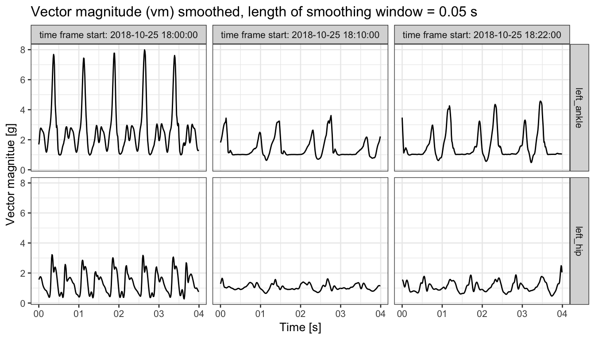
Segmentation with Approach 1: use existing stride pattern templates
Left ankle
We first construct a template object; it is a list of left ankle-specific stride templates. Here, we use two precomputed templates (see ?stride_template for details).
template <- list(stride_template$left_ankle[[2]][1, ],
stride_template$left_ankle[[2]][2, ])
par(mfrow = c(1,2), cex = 0.7)
plot(template[[1]], type = "l", xlab = "", ylab = "", main = "Left ankle: template 1")
plot(template[[2]], type = "l", xlab = "", ylab = "", main = "Left ankle: template 2")
We perform strides segmentation from \((vm)\) accelerometry signal. See ?segmentPattern for details explanation of parameters.
x.la <- acc_running$vm[acc_running$sensor_location == "left_ankle"]
out1.la <- segmentPattern(x = x.la,
x.fs = 100,
template = template,
pattern.dur.seq = seq(0.5, 1.8, length.out = 50),
similarity.measure = "cor",
x.adept.ma.W = 0.15,
finetune = "maxima",
finetune.maxima.ma.W = 0.05,
finetune.maxima.nbh.W = 0.2,
compute.template.idx = TRUE,
run.parallel = TRUE)head(out1.la)
#> tau_i T_i sim_i template_i
#> 1 18 99 4.300014e-08 1
#> 2 142 115 7.533280e-01 1
#> 3 256 76 8.841799e-01 1
#> 4 371 81 9.152038e-01 1
#> 5 451 78 9.075649e-01 1
#> 6 528 75 9.132854e-01 1Each row of the returned data.frame describes one identified pattern occurrence:
-
tau_i- index of a vector (here: \((vm)\) time-series) where an identified pattern occurrence starts, -
T_i- duration of identified pattern occurrence, expressed in a vector length, -
sim_i- value of similarity statistic between an identified pattern occurrence and corresponding window of a time-series used in similarity matrix computation (see?segmentPatternfor details), -
template_i- ifcompute.template.idxequalsTRUE: index of pattern template that yielded highest similarity for an identified pattern occurrence; otherwise:NA.
We now run segmentation on data collected at left hip. We then compare the results.
Left hip
Construct template object; it is a list of left hip-specific stride templates.
template <- list(stride_template$left_hip[[1]][1, ],
stride_template$left_hip[[2]][2, ])
par(mfrow = c(1,2), cex = 0.7)
plot(template[[1]], type = "l", xlab = "", ylab = "", main = "Left hip: template 1")
plot(template[[2]], type = "l", xlab = "", ylab = "", main = "Left hip: template 2")
template <- list(stride_template$left_hip[[1]][1, ],
stride_template$left_hip[[2]][2, ])
x.lh <- acc_running$vm[acc_running$sensor_location == "left_hip"]
out1.lh <- segmentPattern(x = x.lh,
x.fs = 100,
template = template,
pattern.dur.seq = seq(0.5, 1.8, length.out = 50),
similarity.measure = "cor",
x.adept.ma.W = 0.05,
finetune = "maxima",
finetune.maxima.ma.W = 0.15,
finetune.maxima.nbh.W = 0.2,
compute.template.idx = TRUE,
run.parallel = TRUE)Results: estimated stride duration time
We now plot estimated stride duration in seconds (T_i/100) against estimated stride start in minutes (tau_i/(100*60)). Note:
- From the computed \(vmc\), we inferred that ~19.6% of the data time likely corresponds to standing and waiting (not: walking/running) time. Therefore, for the purposes of visualization, we discard ~19.6% of the strides segmented with the lowest similarity (
sim_i) between stride pattern and \((vm)\) signal obtained.
## Time percentage when vmc computed from left ankle is below 0.5
vmc.low.frac
#> [1] 0.196
plt.df.la <-
out1.la %>%
filter(sim_i > quantile(out1.la$sim_i, probs = vmc.low.frac)) %>%
mutate(location = "left_ankle")
plt.df.lh <-
out1.lh %>%
filter(sim_i > quantile(out1.lh$sim_i, probs = vmc.low.frac)) %>%
mutate(location = "left_hip")
rbind(plt.df.la, plt.df.lh) %>%
ggplot(aes(x = tau_i / (100 * 60) , y = T_i / 100)) +
geom_point(alpha = 0.2) +
facet_grid(location ~ .) +
theme_bw(base_size = 10) +
labs(x = "Exercise time [min]", y = "Estimated stride duration time [s]") +
theme(legend.position = "none")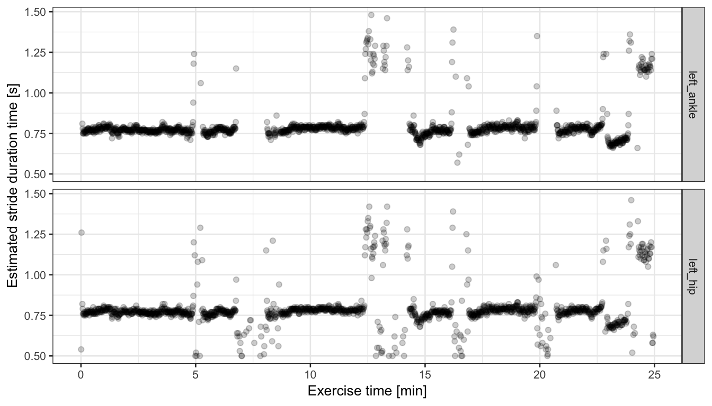
Results: subject-specific stride pattern (left ankle)
We now use the estimated stride occurrence start index (tau_i) and estimated stride duration (T_i) to retrieve \((vm)\) time-series segments corresponding to stride occurrences. We further align them in phase and scale to better observe stride patterns.
## For data frame #1 (raw vm segments)
stride.acc.vec.la <- numeric()
stride.tau_i.vec.la <- numeric()
stride.idx.vec.la <- numeric()
## For data frame #2 (scaled vm segments)
stride_S.acc.vec.la <- numeric()
stride_S.tau_i.vec.la <- numeric()
stride_S.phase.vec.la <- numeric()
for (i in 1:nrow(plt.df.la)){
out.i <- plt.df.la[i, ]
x.la.i <- x.la[out.i$tau_i : (out.i$tau_i + out.i$T_i - 1)]
x.la.i.len <- length(x.la.i)
if (var(x.la.i) < 1e-3) next
## For data frame #1
stride.acc.vec.la <- c(stride.acc.vec.la, x.la.i)
stride.tau_i.vec.la <- c(stride.tau_i.vec.la, rep(out.i$tau_i, x.la.i.len))
stride.idx.vec.la <- c(stride.idx.vec.la, 1:x.la.i.len)
## For data frame #2
x.la.i_S <- approx(x = seq(0, 1, length.out = length(x.la.i)),
y = x.la.i,
xout = seq(0, 1, length.out = 200))$y
x.la.i_S <- as.numeric(scale(x.la.i_S))
stride_S.acc.vec.la <- c(stride_S.acc.vec.la, x.la.i_S)
stride_S.tau_i.vec.la <- c(stride_S.tau_i.vec.la, rep(out.i$tau_i, 200))
stride_S.phase.vec.la <- c(stride_S.phase.vec.la, seq(0, 1, length.out = 200))
}
## data frame #1
stride.df.la <- data.frame(acc = stride.acc.vec.la,
tau_i = stride.tau_i.vec.la,
idx = stride.idx.vec.la)
## data frame #2
stride_S.df.la <- data.frame(acc = stride_S.acc.vec.la,
tau_i = stride_S.tau_i.vec.la,
phase = stride_S.phase.vec.la)## Plot segmented walking strides
plt1 <-
stride.df.la %>%
ggplot(aes(x = idx/100, y = acc, group = tau_i)) +
geom_line(alpha = 0.1) +
theme_bw(base_size = 8) +
labs(x = "Stride pattern duration [s]", y = "Vector magnitude [g]",
title = "Segmented walking strides")
plt2 <-
stride_S.df.la %>%
ggplot(aes(x = phase, y = acc, group = tau_i)) +
geom_line(alpha = 0.1) +
theme_bw(base_size = 8) +
labs(x = "Stride pattern phase", y = "Vector magnitude (scaled) [g]",
title = "Segmented walking strides, aligned and scaled")
grid.arrange(plt1, plt2, nrow = 1)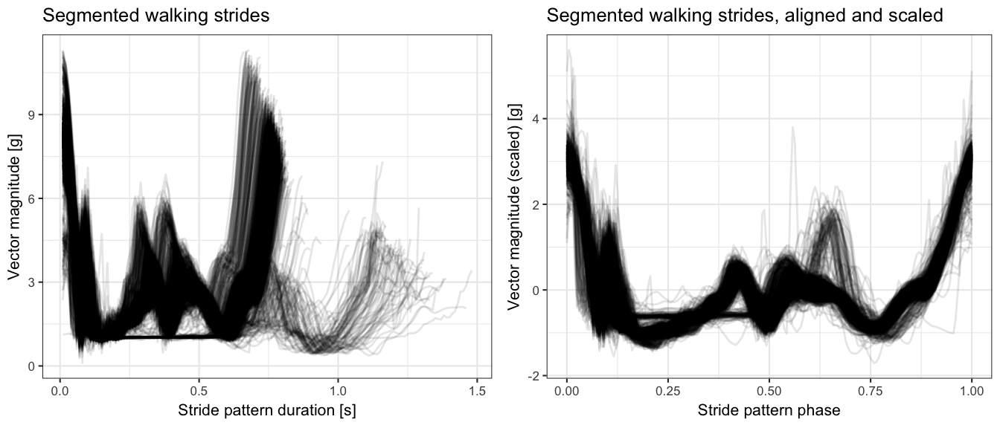
- From the plot of aligned and scaled strides (right hand side above), it seems there are at least two distinct stride patterns pronounced in data - one with a “spike with a dip” in a middle of a stride pattern phase, and another, less frequent (fewer lines on the plot), with a spike at approx. 2/3 of a stride pattern phase.
Correlation clustering of segmented walking strides
We can further use correlation clustering to group segmented walking strides.
## Compute strides distance martrix
stride_S.dfdc.la <- dcast(stride_S.df.la, phase ~ tau_i, value.var = "acc")[, -1]
data.mat.tau_i <- as.numeric(colnames(stride_S.dfdc.la))
data.mat <- as.matrix(stride_S.dfdc.la)
D.mat <- dist(cor(data.mat))
## Get cluster medoids
cluster.k <- 2
medoids.idx <- round(seq(1, ncol(stride_S.dfdc.la), length.out = cluster.k + 2))
medoids.idx <- medoids.idx[-c(1, medoids.idx + 2)]
## Cluster strides
pam.out <- cluster::pam(D.mat, cluster.k, diss = TRUE, medoids = medoids.idx)
table(pam.out$clustering)
## Put clustering results into data frame
data.df <- as.data.frame(t(data.mat))
colnames(data.df) <- seq(0, to = 1, length.out = 200)
data.df$tau_i <- data.mat.tau_i
data.df$cluster <- pam.out$clustering
data.dfm <- melt(data.df, id.vars = c("tau_i", "cluster"))
data.dfm$variable <- as.numeric(as.character(data.dfm$variable))
data.dfm$cluster <- paste0("cluster ", data.dfm$cluster)data.dfm.agg <-
data.dfm %>%
group_by(variable, cluster) %>%
summarise(value = mean(value))
ggplot(data.dfm, aes(x = variable, y = value, group = tau_i)) +
geom_line(alpha = 0.2) +
geom_line(data = data.dfm.agg, aes(x = variable, y = value, group = 1),
color = "red", size = 1, inherit.aes = FALSE) +
facet_grid(cluster ~ .) +
theme_bw(base_size = 8) +
labs(x = "Stride pattern phase", y = "Vector magnitude (scaled) [g]",
title = "Segmented walking strides, aligned, scaled, clustered\nRed line: point-wise mean") 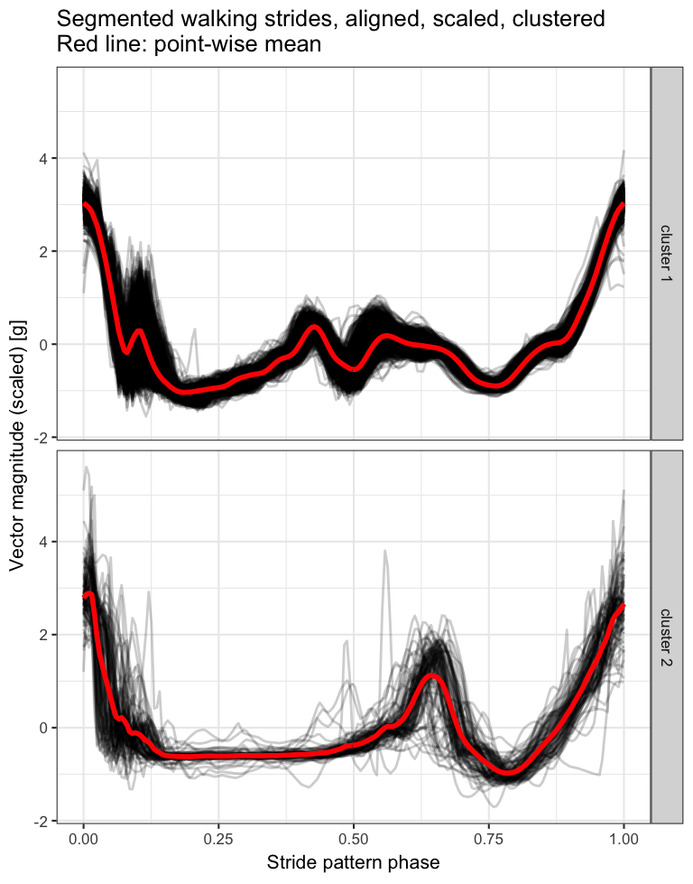
We can further plot the estimated stride duration time over the course of the running exercise, marking the stride cluster assignment with colour.
data.dfm %>%
select(tau_i, cluster) %>%
distinct() %>%
left_join(plt.df.la, by = "tau_i") %>%
ggplot(aes(x = tau_i / (100 * 60) , y = T_i / 100, color = cluster)) +
geom_point(alpha = 0.4) +
theme_bw(base_size = 10) +
labs(x = "Exercise time [min]", y = "Estimated stride duration time [s]",
color = "Stride assignment: ") +
theme(legend.position = "top")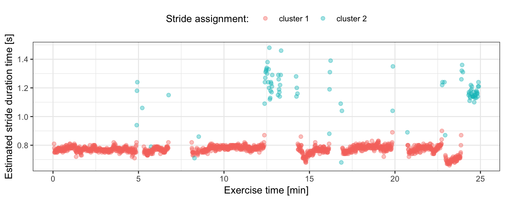
Segmentation with Approach 2: derive stride pattern templates manually
We now demonstrate a way of deriving stride patterns from data in a semi-manual way. The proposed procedure is done separately for data collected at two different locations, and goes as follows:
Select short fragments of \((vm)\) time-series that are likely to represent data coming from different pace of running/walking. Here, we select three such \((vm)\) fragments, each of 6 seconds length, similarly as we did above for \((x,y,z)\) and \((vm)\) visualization.
Within each of three \((vm)\) fragments, use a function to automatically identify all local maxima.
Within each of three \((vm)\) fragments, identify a subset of local maxima that corresponds to \((vm)\) peaks of interest via visual inspection (“manual” part).
For each of three \((vm)\) fragments, cut the \((vm)\) fragment into parts at the points of identified local maxima subset. Interpolate parts to common a length and compute their point-wise average. The resulted point-wise average is a newly created pattern template.
That way, for each sensor location, we arrive at three distinct stride pattern templates that we further use in segmentation.
## Function to compute local maxima
## source: https://stackoverflow.com/questions/6836409/finding-local-maxima-and-minima
localMaxima <- function(x) {
y <- diff(c(-.Machine$integer.max, x)) > 0L
rle(y)$lengths
y <- cumsum(rle(y)$lengths)
y <- y[seq.int(1L, length(y), 2L)]
if (x[[1]] == x[[2]]) {
y <- y[-1]
}
y
}
## Function which cut x vector at indices given by x.cut.idx,
## approximate cut parts into common length and average
## parts point-wise into one vector
cut.and.avg <- function(x, x.cut.idx){
x.cut.idx.l <- length(x.cut.idx)
mat.out <- matrix(NA, nrow = x.cut.idx.l-1, ncol = 200)
for (i in 1:(length(x.cut.idx)-1)){
xp <- x[x.cut.idx[i]:x.cut.idx[i+1]]
mat.out[i, ] <- approx(seq(0, 1, length.out = length(xp)), xp, seq(0, 1, length.out = 200))$y
}
out <- apply(mat.out, 2, mean)
}
## Make subset of data which has data parts of different speed of running
acc_running_sub2 <-
acc_running %>%
filter((date_time >= t1 & date_time < t1 + 6) |
(date_time >= t2 & date_time < t2 + 6) |
(date_time >= t3 & date_time < t3 + 6)) %>%
mutate(dt_floor = floor_date(date_time, unit = "minutes"))
## Vector of signatures for data parts of different speed of running
dt_floor.unique <- unique(acc_running_sub2$dt_floor)Deriving stride patterns in a semi-manual way: left ankle
## Left ankle-specific subset of data
sub.la <- acc_running_sub2[acc_running_sub2$sensor_location == "left_ankle", ]
par(mfrow = c(1,3), cex = 0.6)
## Left ankle: template 1
x1 <- sub.la[sub.la$dt_floor == dt_floor.unique[1], "vm_smoothed1"]
x1.locMax <- localMaxima(x1)
plot(1:length(x1), x1, type = "l", main = "(vm) local maxima", xlab = "Index", ylab = "")
abline(v = x1.locMax, col = "red")
plot(1:length(x1), x1, type = "l", main = "(vm) local maxima subset", xlab = "Index", ylab = "")
abline(v = x1.locMax[c(2, 8, 11, 14, 17, 22, 25, 29)], col = "red")
template.la.x1 <- cut.and.avg(x1, x1.locMax[c(2, 8, 11, 14, 17, 22, 25, 29)])
plot(1:length(template.la.x1), template.la.x1, type = "l",
col = "red", main = "left ankle: template 1", xlab = "Index", ylab = "")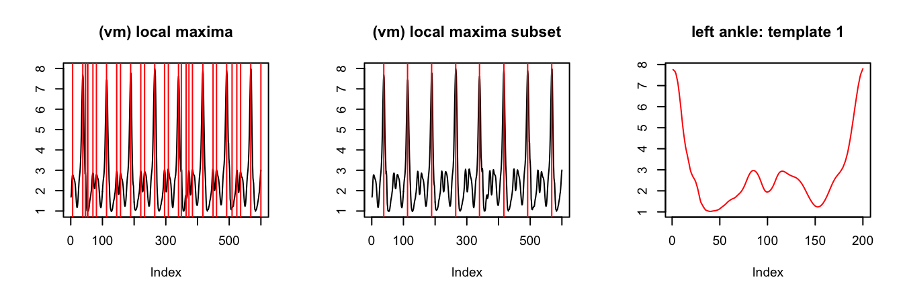
## Left ankle: template 2
x2 <- sub.la[sub.la$dt_floor == dt_floor.unique[2], "vm_smoothed1"]
x2.locMax <- localMaxima(x2)
plot(1:length(x2), x2, type = "l", main = "(vm) local maxima", xlab = "Index", ylab = "")
abline(v = x2.locMax, col = "red")
plot(1:length(x2), x2, type = "l", main = "(vm) local maxima subset", xlab = "Index", ylab = "")
abline(v = x2.locMax[c(1, 10, 19, 26, 39)], col = "red")
template.la.x2 <- cut.and.avg(x2, x2.locMax[c(1, 10, 19, 26, 39)])
plot(1:length(template.la.x2), template.la.x2, type = "l",
col = "red", main = "left ankle: template 2", xlab = "Index", ylab = "")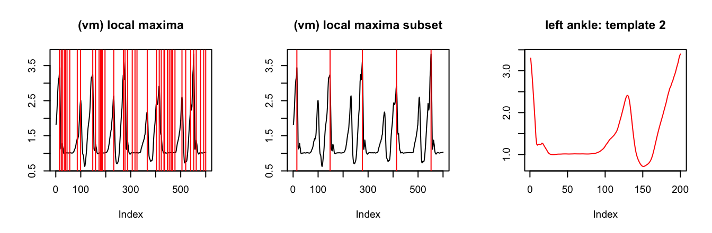
## Left ankle: template 3
x3 <- sub.la[sub.la$dt_floor == dt_floor.unique[3], "vm_smoothed1"]
x3.locMax <- localMaxima(x3)
plot(1:length(x3), x3, type = "l", main = "(vm) local maxima", xlab = "Index", ylab = "")
abline(v = x3.locMax, col = "red")
plot(1:length(x3), x3, type = "l", main = "(vm) local maxima subset", xlab = "Index", ylab = "")
abline(v = x3.locMax[c(1, 8, 18, 26, 37, 44)], col = "red")
template.la.x3 <- cut.and.avg(x3, x3.locMax[c(1, 8, 18, 26, 37, 44)])
plot(1:length(template.la.x3), template.la.x3, type = "l",
col = "red", main = "left ankle: template 3", xlab = "Index", ylab = "")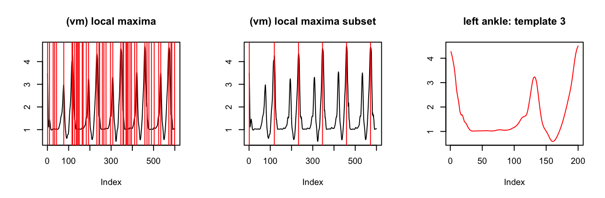
Deriving stride patterns in a semi-manual way: left hip
## Left hip-specific subset of data
sub.lh <- acc_running_sub2[acc_running_sub2$sensor_location == "left_hip", ]
par(mfrow = c(1,3), cex = 0.6)
## Left hip: template 1
x1 <- sub.lh[sub.lh$dt_floor == dt_floor.unique[1], "vm_smoothed1"]
x1.locMax <- localMaxima(x1)
plot(1:length(x1), x1, type = "l", main = "(vm) local maxima", xlab = "Index", ylab = "")
abline(v = x1.locMax, col = "red")
plot(1:length(x1), x1, type = "l", main = "(vm) local maxima subset", xlab = "Index", ylab = "")
abline(v = x1.locMax[c(2, 7, 13, 18, 23, 29, 36, 41)], col = "red")
template.lh.x1 <- cut.and.avg(x1, x1.locMax[c(2, 7, 13, 18, 23, 29, 36, 41)])
plot(1:length(template.lh.x1), template.lh.x1, type = "l",
col = "red", main = "left ankle: template 1", xlab = "Index", ylab = "")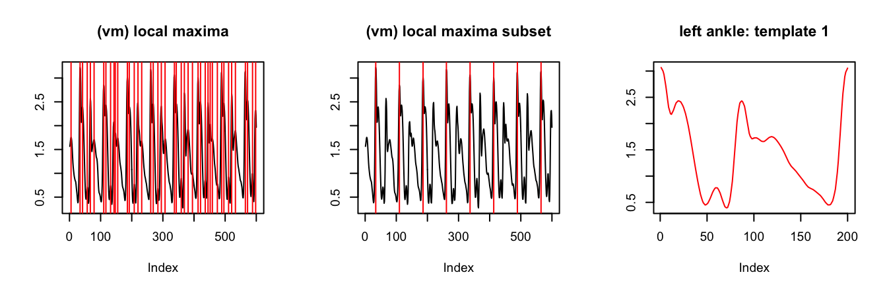
## Left hip: template 2
x2 <- sub.lh[sub.lh$dt_floor == dt_floor.unique[2], "vm_smoothed1"]
x2.locMax <- localMaxima(x2)
plot(1:length(x2), x2, type = "l", main = "(vm) local maxima", xlab = "Index", ylab = "")
abline(v = x2.locMax, col = "red")
plot(1:length(x2), x2, type = "l", main = "(vm) local maxima subset", xlab = "Index", ylab = "")
abline(v = x2.locMax[c(1, 7, 15, 23, 29)], col = "red")
template.lh.x2 <- cut.and.avg(x2, x2.locMax[c(1, 7, 15, 23, 29)])
plot(1:length(template.lh.x2), template.lh.x2, type = "l",
col = "red", main = "left ankle: template 2", xlab = "Index", ylab = "")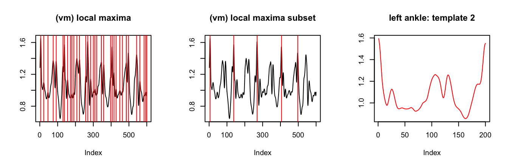
## Left hip: template 3
x3 <- sub.lh[sub.lh$dt_floor == dt_floor.unique[3], "vm_smoothed1"]
x3.locMax <- localMaxima(x3)
plot(1:length(x3), x3, type = "l", main = "(vm) local maxima", xlab = "Index", ylab = "")
abline(v = x3.locMax, col = "red")
plot(1:length(x3), x3, type = "l", main = "(vm) local maxima subset", xlab = "Index", ylab = "")
abline(v = x3.locMax[c(5, 13, 19, 24, 31)], col = "red")
template.lh.x3 <- cut.and.avg(x3, x3.locMax[c(5, 13, 19, 24, 31)])
plot(1:length(template.lh.x3), template.lh.x3, type = "l",
col = "red", main = "left ankle: template 3", xlab = "Index", ylab = "")
Segmentation
out2.la <- segmentPattern(x = x.la,
x.fs = 100,
template = template.la,
pattern.dur.seq = seq(0.5, 1.8, length.out = 50),
similarity.measure = "cor",
x.adept.ma.W = 0.15,
finetune = "maxima",
finetune.maxima.ma.W = 0.05,
finetune.maxima.nbh.W = 0.2,
compute.template.idx = TRUE,
run.parallel = TRUE)
out2.lh <- segmentPattern(x = x.lh,
x.fs = 100,
template = template.lh,
pattern.dur.seq = seq(0.5, 1.8, length.out = 50),
similarity.measure = "cor",
x.adept.ma.W = 0.05,
finetune = "maxima",
finetune.maxima.ma.W = 0.15,
finetune.maxima.nbh.W = 0.2,
compute.template.idx = TRUE,
run.parallel = TRUE)Results: estimated stride duration time
plt.df.la <-
out2.la %>%
filter(sim_i > quantile(out1.la$sim_i, probs = vmc.low.frac)) %>%
mutate(location = "left_ankle")
plt.df.lh <-
out2.lh %>%
filter(sim_i > quantile(out1.lh$sim_i, probs = vmc.low.frac)) %>%
mutate(location = "left_hip")
rbind(plt.df.la, plt.df.lh) %>%
ggplot(aes(x = tau_i / (100 * 60) , y = T_i / 100)) +
geom_point(alpha = 0.2) +
facet_grid(location ~ .) +
theme_bw(base_size = 10) +
labs(x = "Exercise time [min]", y = "Estimated stride duration time [s]") +
theme(legend.position = "none")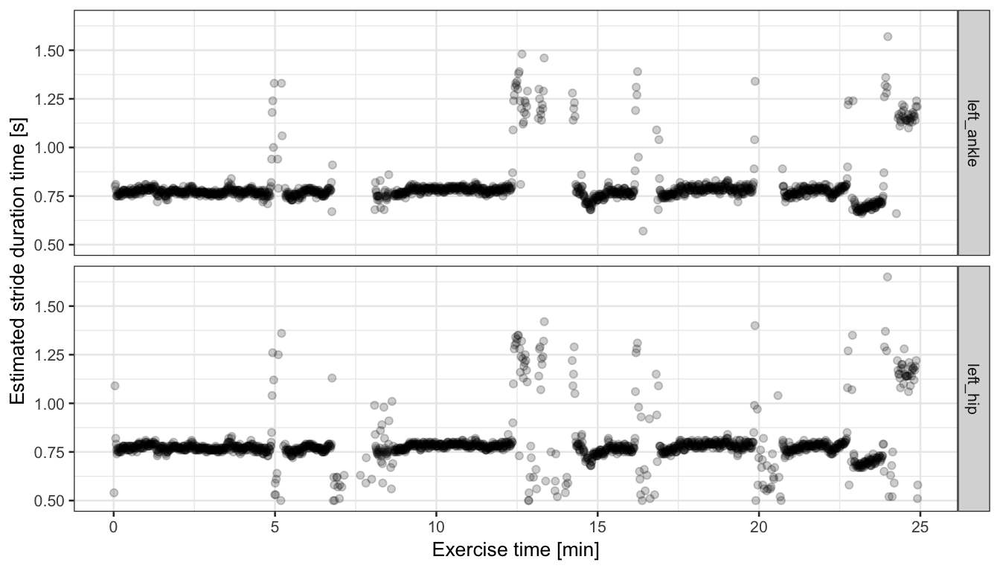
Observations
From the plot above we see that the estimated stride duration times are fairly consistent between the two sensor locations, and also consistent with the estimates we obtained based on external, pre-computed stride pattern templates.
In the plot above, we do see discrepancies in a presence of certain points between upper and lower plot panels; recall that the segmentation results were filtered to keep only these estimates for which corresponding similarity between \((vm)\) and pattern template was higher than a 19.6th percentile threshold, which might have been different between left ankle and left hip stride segmentation results.
References
References:
1: Karas, M. “Introduction to adept package” package vignette.
2: Karas, M., Bai, J., Straczkiewicz, M., Harezlak, J., Glynn, N W., Harris, T., Zipunnikov, V., Crainiceanu, C., Urbanek, J.K. Accelerometry data in health research: challenges and opportunities. Review and examples, Statistics in Biosciences, 2018. (link)
3: Karas, M., Straczkiewicz, M., Fadel, W., Harezlak, J., Crainiceanu, C., Urbanek, J.K. Adaptive empirical pattern transformation (ADEPT) with application to walking stride segmentation, Submitted to Biostatistics, 2018.